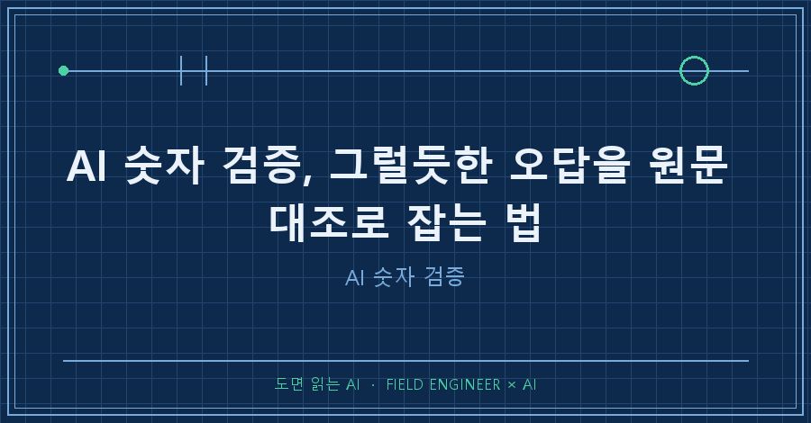
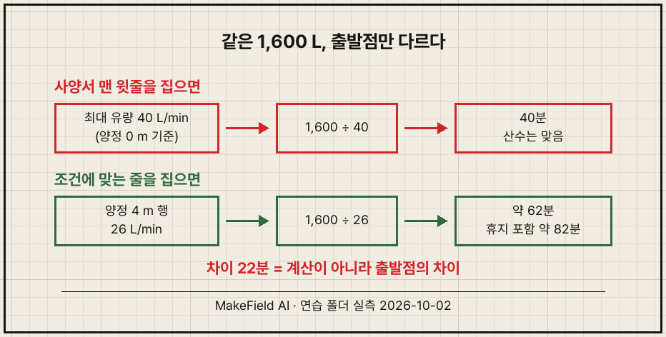
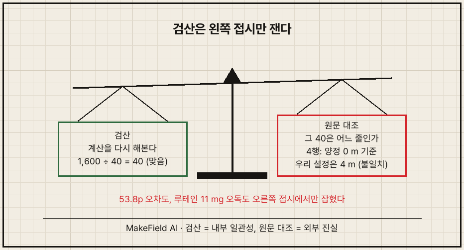
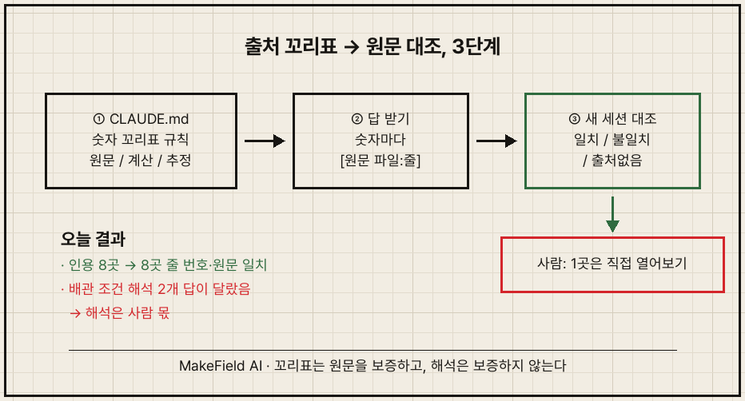

AI 숫자 검증의 핵심은 계산이 아니라 출발점을 보는 거예요. AI가 준 숫자는 대개 계산은 맞고, 처음 가져온 값이 틀립니다. 그래서 순서는 두 단계예요. 숫자마다 "어느 파일 몇 번째 줄"인지 출처를 붙이게 하고, 그 줄을 원문과 한 번 대조합니다. "검산해줘"만으로는 이 오류가 안 잡혀요.
지난 편까지 규칙 파일을 한 층에 하나씩 정리했죠. 이번 편부터 4단계, 검증입니다. 그 규칙에 숫자 꼬리표 규칙 하나를 더합니다.
현장에서 15년 동안 계측값을 다뤄왔는데, 숫자를 보면 제일 먼저 묻는 게 있어요. "이건 어떤 조건에서 잰 값이냐." 오늘 얘기가 전부 그 질문입니다. 실험은 2026년 10월 2일, 지난 편 물탱크 연습 폴더에 펌프 사양서 한 장을 더 넣고 Claude Code(2.1.287)로 돌렸어요.
1. 그럴듯한 오답은 어떻게 생기나
그럴듯한 오답은 맞는 계산을 틀린 출발점에 댈 때 생깁니다. 연습용으로 이런 상황을 만들었어요. 지하 펌프실의 소형 펌프로 옥상 탱크를 200 L에서 1,800 L까지, 1,600 L를 채웁니다. 펌프 사양서(연습용 가상 펌프)는 이렇게 생겼어요.
tank\docs\pump_wp40_spec.txt
4: 최대 유량 40 L/min (양정 0 m 기준)
...
11: 양정 (m) 유량 (L/min)
12: 0 40
13: 2 34
14: 4 26양정은 물을 올려야 하는 높이예요. 연습 설정상 펌프에서 탱크 급수구까지는 4 m(kb/fact_pump_line.md에 줄자 실측으로 적어둔 값)라서 맞는 유량은 26 L/min, 정답은 1,600 ÷ 26 ≈ 약 62분입니다. 사양서가 권하는 "30분 운전 후 10분 휴지"까지 넣으면 약 82분이고요.
그런데 사양서 맨 윗줄은 40이에요. 이걸로 나누면 40분. 산수는 맞고, 숫자도 깔끔하고, 실제보다 22분 짧습니다.

2. 파일 없이 물어보면 AI는 뭐라고 할까
AI가 정말 저 40을 집어 들까 궁금해서, 파일이 하나도 없는 빈 폴더에서 물어봤어요.
> WP-40 소형 급수 펌프로 물탱크 1,600 L를 채우려면 몇 분 걸려? 숫자만 간단히.
숫자로 답할 수 없어요. 작업 폴더가 비어 있고, 제가 아는 정보 중에도
WP-40의 토출량(L/min)이 없습니다.
걸리는 시간(분) = 1,600 ÷ 토출량(L/min)
예를 들어 토출량이 40 L/min이면 40분입니다.3번 돌려서 3번 다 "모른다" 고 했어요. 지어내진 않았습니다. 그런데 3번 다 예시로 "40 L/min이면 40분"을 들었어요. 모델명 WP-40의 40이 예시로 흘러 들어간 걸로 보여요. 대충 읽으면 머리에 남는 숫자는 "40분"입니다..
쇼핑몰 상세페이지처럼 "최대 유량 40 L/min"만 붙여주고 "지하에서 옥상으로"라고 하면 이렇게 나와요.
**최소 40분**입니다. 1,600 ÷ 40 = 40이에요.
다만 '최대 유량'은 보통 물을 높이 올리지 않을 때(양정 0 m) 기준이에요.
지하에서 옥상까지 올리면 유량이 줄어서 실제로는 40분보다 더 걸립니다.2번 다 경고는 정확히 달았어요. 다만 굵은 글씨는 40분이고, 맞는 답은 경고문 안에 숨어 있습니다. 오답은 이렇게 "틀렸다"는 모양이 아니라 "최소값"이라는 그럴듯한 모양으로 와요.
반대로 연습 폴더(kb/에 배관 높이 4 m, docs/에 사양서)에서 같은 질문을 하면 3번 모두 "약 62분"이었고, 26 L/min을 어느 파일에서 가져왔는지까지 적었습니다. 원문이 AI 손 닿는 곳에 있느냐가 첫 번째 갈림길이에요.
3. 제 리포트는 틀린 값에 "검산 일치" 도장을 찍었어요
"그럼 검산을 시키면 되지 않나?" 저도 그렇게 생각했다가 크게 데었습니다.
저는 매일 새벽 AI가 공개 시장 지표를 모아 개인 학습용 리포트를 만들게 해둡니다. 8월 26일 리포트에 이 줄이 있었어요.
어제 '확인불가' 나스닥100 → 29,077(-0.79%) 확정 (산술검산 일치)다음 날 리포트가 스스로 정정했습니다.
실제는 29,023.18(-0.97%), 오차 53.8p입니다. 지수 레벨을 직접 보지 않고
기사의 등락률로 역산했기 때문이며, 계산은 완벽했으나 출발점이 틀렸습니다.
→ 산술검산은 내부 일관성만 증명할 뿐 외부 진실을 증명하지 않는다.괄호 안 다섯 글자, 산술검산 일치를 보고 저는 확인된 값으로 읽었어요. 검산이 실제로 한 일은 자기가 만든 숫자를 자기 식으로 되짚은 것뿐이었는데요. 펌프로 치면 1,600 ÷ 40 = 40을 다시 나눠보고 "맞다"고 한 겁니다.
비슷한 일이 영양제 정리표에서도 있었어요. AI가 루테인을 11 mg으로 적어뒀는데, 라벨 원문은 standardized to trans-lutein 5mg였습니다. 11은 마리골드 추출물 전체 무게였고, 다른 성분에서도 같은 오독(1,600 → 300 mg)이 한 번 더 나왔어요. 펌프 최대 유량과 똑같은 모양입니다. 대표 숫자와 조건 붙은 숫자를 헷갈리는 오독이에요.
오늘 같은 "최소 40분" 답을 빈 폴더의 새 세션 2개에 "검산해줘"라고 줘봤더니, 이번엔 둘 다 "나눗셈은 맞지만 40 L/min의 근거가 없다"고 짚었어요. 요즘 AI는 이 정도는 잡아줍니다. 그래도 출처 파일이 없으니 정답 62분까지는 못 갔어요. 의심은 해주지만 대조할 원문이 없으면 결론을 못 냅니다.

4. 따라 하기 — 출처 꼬리표 붙이고 원문 대조하기
순서는 세 단계예요.
① 규칙 파일에 숫자 꼬리표 규칙 넣기. 지난 편 방식대로 이건 모든 작업 공통이라 상위 CLAUDE.md 한 곳에만 넣었어요.
## 숫자 답 규칙
- 답에 나오는 숫자마다 꼬리표 하나를 붙인다
- [원문 파일:줄 "그 줄 그대로"] — 파일에 적힌 숫자
- [계산: 식] — 다른 숫자로 계산한 값
- [추정: 이유] — 파일에 없는 값
- 사양서의 대표값(최대·정격)을 쓸 땐 그 값의 조건이 지금 상황과 같은지 먼저 확인한다② 평소처럼 묻기. 질문은 그대로 "몇 분 걸려? 숫자만 간단히"였는데, 답이 이렇게 바뀌었어요(일부 발췌).
- 채울 양: 1,600 L [계산: 1,800 − 200]
- 유량: 26 L/min [원문 docs/pump_wp40_spec.txt:14 "4 26"]
- 사양서 맨 위의 최대 유량 40 L/min은 높이 0 m일 때 값이라 지금 상황에는
맞지 않습니다 [원문 docs/pump_wp40_spec.txt:4 "최대 유량 40 L/min (양정 0 m 기준)"]
- 펌프만 돌리는 시간: 약 62분 [계산: 1,600 ÷ 26 = 61.5]꼬리표가 붙으면 좋은 점이 하나 더 있어요. [추정]이 붙은 숫자가 바로 의심할 자리라는 게 눈에 보입니다.
③ 원문 대조는 다른 세션에게. 답을 만든 세션이 아니라 새 세션에 시켜요. 계산은 다시 하지 말고 출처만 보라는 게 포인트입니다.
> 아래 답에 나온 숫자 하나하나가 어느 파일 몇 번째 줄에서 왔는지 원문과
대조해서 표로 보여줘. 칸: 숫자 / 원문 위치 / 원문 그대로 / 판정
(일치·불일치·출처없음). 계산을 다시 하지 말고, 파일은 고치지 마.아까 그 "최소 40분" 답을 연습 폴더의 새 세션에 넣었더니 이렇게 돌아왔어요(질문 전제 200·1,800 두 줄은 생략).
| 숫자 | 원문 위치 | 판정 |
|---|---|---|
| 1,600 | 없음 | 출처없음 (1,800 − 200으로 만든 값) |
| 40 (L/min) | docs/pump_wp40_spec.txt:4 | 불일치 — 양정 0 m 행. 이 탱크는 4 m(kb/fact_pump_line.md:8), 4 m 행은 :14 "26" |
| 40분 | 없음 | 출처없음 |
마지막으로 꼬리표 하나는 사람이 직접 열어봐요. 메모장으로 그 줄을 봐도 되고, PowerShell이면 한 줄입니다.
PS> Select-String -Path docs\pump_wp40_spec.txt -Pattern "^4 "
docs\pump_wp40_spec.txt:14:4 26저는 꼬리표 붙은 답 2개의 인용 8곳을 전부 열어봤는데 8곳 모두 줄 번호와 원문이 맞았어요. 그런데 해석은 달랐습니다. 배관이 "약 5 m, 엘보 2개"인데 사양서 조건은 "5 m 이내, 엘보 2개 이하"예요. 한 답은 "기준 안에 든다", 다른 답은 "대략값이라 유량이 조금 적을 수 있다"고 했습니다. 꼬리표는 원문이 맞는지는 보증하지만, 그 원문을 어떻게 읽을지는 결국 사람이 정해야 해요.

5. AI 숫자 검증, 검산과 원문 대조는 잡는 게 다릅니다
| 검산 | 원문 대조 | |
|---|---|---|
| 묻는 것 | 계산이 맞나 | 그 숫자가 어느 줄에서 왔나 |
| 잡는 오류 | 나눗셈·단위 실수 | 조건 다른 값, 총량↔유효량 오독, 지어낸 값 |
| 오늘 실험 | "40분" 답: 의심은 했지만 결론 못 냄 | "40" = 양정 0 m 행, 불일치 판정 |
| 내 사고 | 53.8p 오차에 "일치" 도장 | 레벨 원본을 봤으면 바로 잡힘 |
이번 편의 방식은 Codex CLI(GPT)나 Gemini CLI에서도 똑같이 됩니다. 숫자 꼬리표 규칙을 Codex는 AGENTS.md, Gemini CLI는 GEMINI.md에 넣으면 되고, 대조용 프롬프트는 그대로 붙여 넣으면 돼요(2026년 10월 기준).
Q. 꼬리표를 붙이면 AI가 줄 번호를 지어낼 수도 있지 않나요?
그럴 수 있어서 ③단계가 있는 거예요. 오늘은 8곳 다 맞았지만 두 번 실행한 결과일 뿐이라, 이 절차에는 새 세션 대조와 사람 한 곳 확인을 고정으로 넣었어요. 줄 번호는 지어내기 쉬워도, 그 줄을 열어보면 바로 들통나요.
Q. 파일에 없는 숫자, 예를 들어 상식적인 값은 어떻게 하나요?
[추정: 이유]로 받으면 됩니다. 추정 자체가 나쁜 게 아니라, 추정이 확정처럼 생긴 게 문제예요. 중요한 추정값은 확인한 뒤 kb/의 fact_ 파일로 올려두면 다음부터는 [원문]으로 바뀝니다.
Q. 매번 이렇게 하기엔 너무 번거롭지 않나요?
AI 숫자 검증을 모든 숫자에 걸 필요는 없어요. 숫자가 결정을 바꿀 때만 하면 돼요. 기준은 "이 숫자가 틀리면 돈·시간·안전 중 하나가 바뀌나?" 하나로 충분하고, 해당할 때만 ③단계까지 가길 권합니다. 펌프 22분 차이는 해당돼요. 탱크가 빌 때 언제 다시 차는지가 걸려 있으니까요.
여러분이 최근 AI한테 받아서 그대로 쓴 숫자 중에, 어느 줄에서 왔는지 말할 수 있는 건 몇 개나 되세요? 다음 편은 원문이 두 개인데 서로 다른 값을 말할 때, 어느 쪽을 믿을지 정하는 교차검증 이야기입니다.
숫자마다 출처를 붙이는 이런 작업 규칙은 makefield.ai에 차례로 모아두고 있어요.
태그: #AI숫자검증 #AI출처요구 #AI답변원문대조 #AI검산한계 #AI할루시네이션확인 #그럴듯한오답 #AI팩트체크 #출처꼬리표 #클로드코드CLAUDEmd #AI교차검증 #AGENTSmd #ClaudeCode #CodexCLI #GeminiCLI #비개발자AI